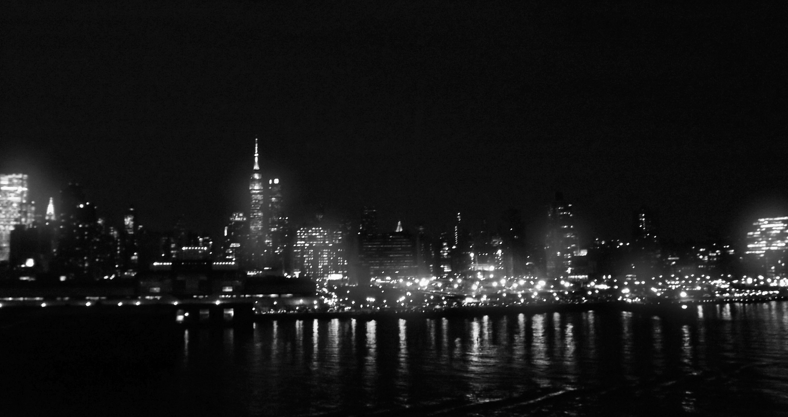
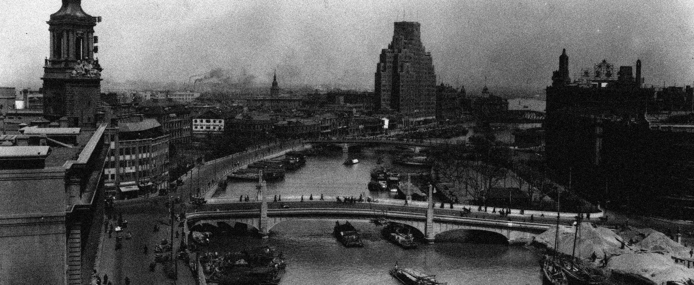
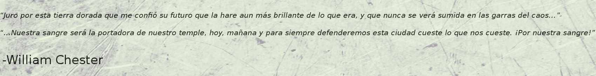

Historia
Le Nouva fue fundada durante las expediciones británicas de 1754, convirtiéndose posteriormente en uno de las ciudades comerciales más exitosos de esa época bajo el nombre de La Dorata, bautizada así por la sorpresa que represento en cuanto a los múltiples recursos que ofrecía para el tamaño que posee y la facilidad que represento obtenerlos para la corona. La cual posteriormente albergaría la concentración más grande de italianos que vivieron durante décadas en la urbe.
A partir de 1860 gracias a las leyes abolicionistas, La Dorata se convirtió en una de las principales rutas de comercio para los traficantes ilegales de esclavos debido a su facilidad de dar con el mar y las rutas marítimas más importantes del Caribe. Esta situación llego a su fin a finales de 1890 cuando habían mermado los constantes envíos ilegales del Caribe y las diversas leyes que se vieron impuestas para regular dicha situación. Durante este periodo de tiempo diversos habitantes de la ciudad habían migrado por las constantes operaciones ilegales que se habían llevado a cabo, convirtiendo a La Dorata por un tiempo en una red de contrabandismo importante

Guerra Fría
En 1937 gracias al auge tecnológico implementado en la ciudad los numerosos habitantes que habían migrado de La Dorata volvieron de manera paulatina, lo que produjo una severa tensión social en los ciudadanos que se habían instalado en la ciudad después de la migración debido al cambio cultural que estos habían representado para la sociedad por más de una década, la cual si bien no había sido lo suficientemente radical como para cambiar las normas morales, habían despertado cierto desprecio por los residentes anteriores por no formar parte del acuerdo y las medidas que fueron implementadas en la ciudad años antes para luchar contra el tráfico ilegal de la ciudad.
Estas tensiones se vieron en aumento durante 1950, cuando La Dorata formo parte de la guerra fría enviando soldados a la guerra de Vietnam durante sus momentos más tensos y sirviendo como puerto para el envió de armas y provisiones. Solo podían participar los ciudadanos que hubieran nacido o vivido en la ciudad por un rango de tiempo de 5 años, omitiendo por completo a los extranjeros que tenían que tener un rango de estancia en la ciudad de cómo mínimo 10 años para participar en la guerra, convirtiendo a los antiguos residentes en los principales participes de la guerra.

William Chester
Durante la década de 1970 y 1975 la ciudad fue rebautizada bajo el nombre de Le Nouva por el entonces alcalde William Chester, reflejando el progreso que había tenido la ciudad a pesar de la constante guerra que se había librado con anterioridad, vendiéndola ante sus ciudadanos y el panorama mundial como “La nueva cara de la tierra dorada” y jurándole lealtad a toda su gente bajo el nuevo lema de todos los cuerpos de defensa de la ciudad “Por nuestra sangre, defenderemos a las personas buenas de la injusticia del hoy y el mañana”.
Después del asesinato de William Chester en 1998 la ciudad empezó a sufrir un colapso económico debido a las protestas que se dieron por dicho suceso y la represión que se tuvo que tomar en diversas zonas, lo que ocasiono una recesión profunda en los ingresos de la ciudad y un desplome en su producción. Esto alimentado por el constante descontento civil llevo a que poderosas familias delictivas que estaban asentadas en la ciudad desde los años 60 pusieran en marcha un operativo para financiar numerosas acciones y proyectos de la ciudad para ayudarlo a que este se recuperara de la crisis que estaba pasando. Esto ocasiono que en los años posteriores estas familias fueran acrecentando su poder hasta hacerse con gran parte de la ciudad, produciendo numerosos conflictos entre estas familias que hasta hoy en día, siguen vigentes.

“Juro por esta tierra dorada que me confió su futuro que la hare aun más brillante de lo que era, y que nunca se verá sumida en las garras del caos…”
“…Nuestra sangre será la portadora de nuestro temple, hoy, mañana y para siempre defenderemos esta ciudad cueste lo que nos cueste. ¡Por nuestra sangre!”
-William Chester
{kind=link}
{kind=link}
{kind=link}
{kind=link}
{kind=link}
{kind=link}
{kind=link}
{kind=link}
{kind=link}
{kind=link}